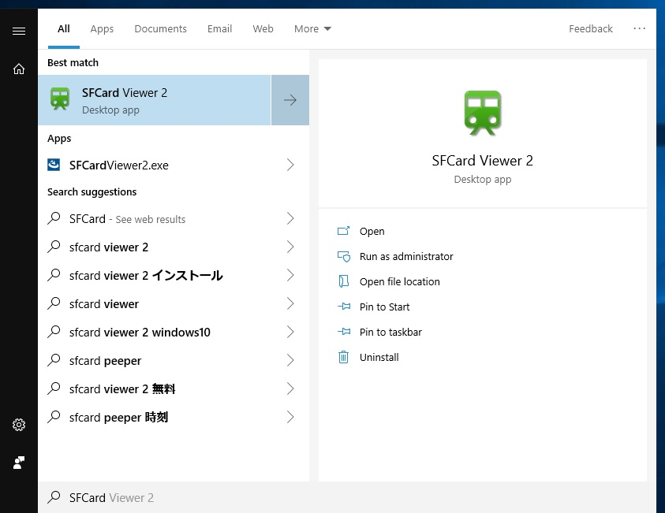
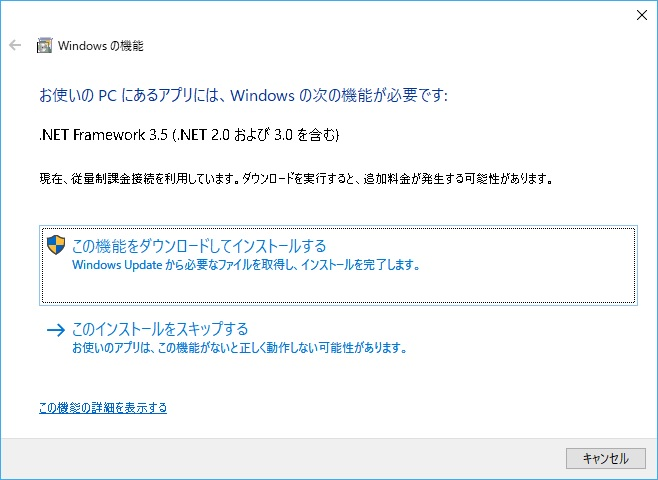
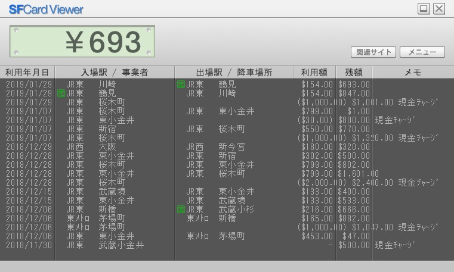
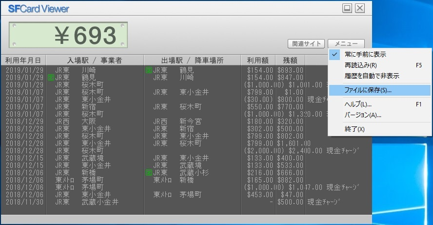
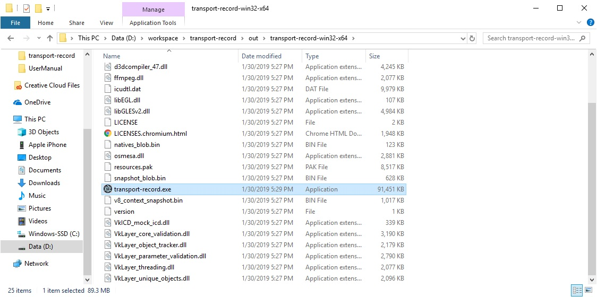
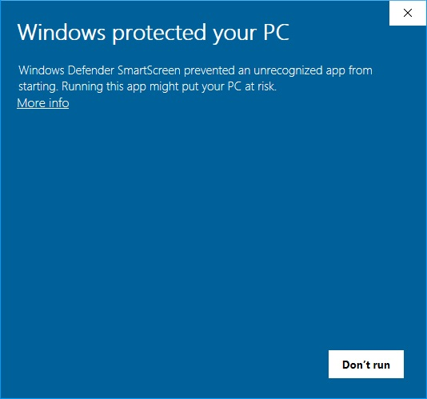
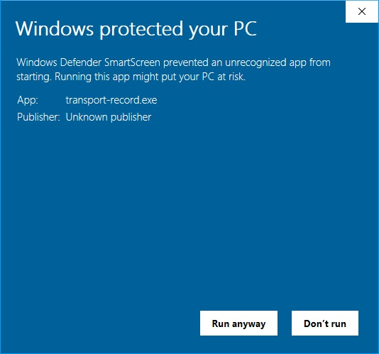
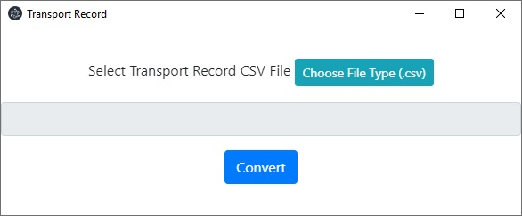
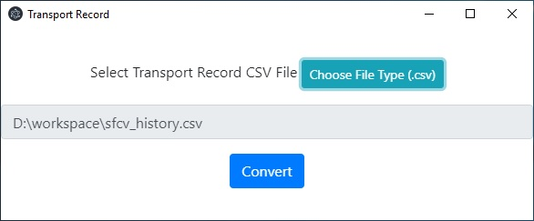
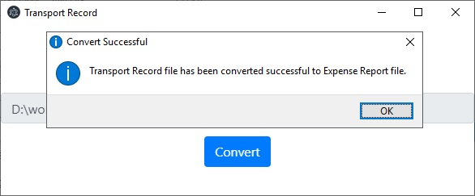

Transport Record Converterのユーザーマニュアル
NFCポート／パソリRC-S380を接続し、Suica／PASMOカードを置いてください。
Start Menuを開き、SFCard Viewer 2を検索して開きます。
初めてこのダイアログが表示されます。この機能をダウンロードして「インストールする」をクリックしてください。
SFCard Viewer 2でカードの読み取りが成功したとき
「メニュー」ボタンをクリックして、「ファイルに保存(S)...」オプションをクリックして、読み込んだデータをCSVファイルに保存します。
transport-record-win32-x64フォルダーにあるtransport-record.exeを開きます。
初めて警告ダイアログが表示されることがあります。「More info」又は「詳細情報」をクリックしてください。
「Run anyway」又は「実行」ボタンをクリックしてください。
「Choose File Type (.csv)」ボタンをクリックしてください。
CSVファイルへのパスが表示されます。「Convert」ボタンをクリックしてください。
しばらく待ってください。変換が完了すると、変換成功ダイアログが表示されます。ExcelファイルはCSVファイルと同じフォルダに保存されます。